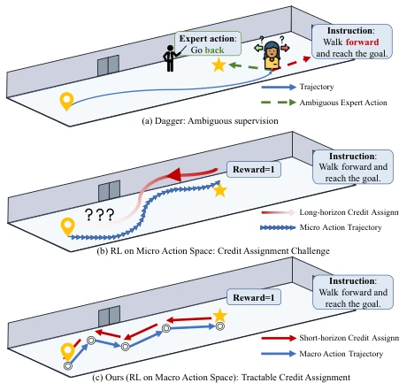
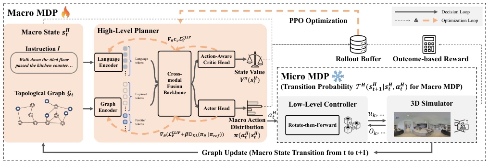
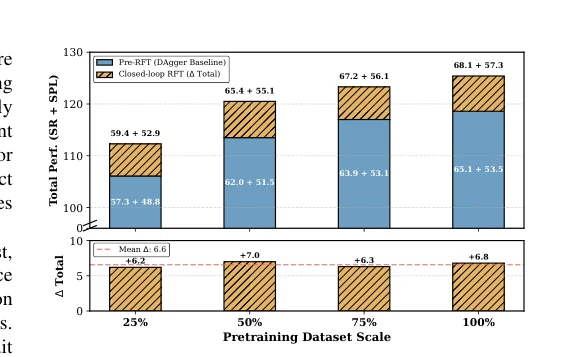
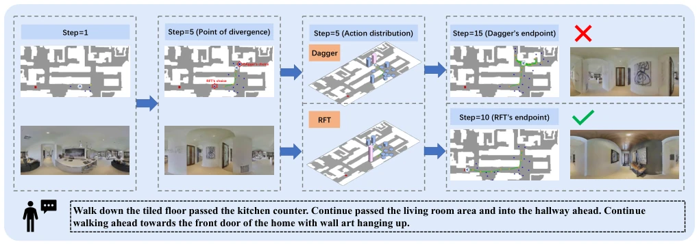

This paper offers a "macro perspective" for VLN-CE RL training. Instead of struggling with sparse rewards in the micro action space, the authors abstract the environment into a topological graph, allowing RL to only be responsible for selecting waypoints (Macro Action). This approach is indeed clever, compressing hundreds of steps of decision-making into 5-20 steps, thereby resolving the credit assignment problem. However, low-level control still relies on heuristic rules (rotate-then-forward), which constitutes a "lazy" design; although it saves training costs, it also limits the upper bound of end-to-end optimization. The conclusion also acknowledges the sim-to-real gap, indicating that this "macro planning" is still distant from real-world deployment. Nevertheless, given the SOTA results on R2R-CE and RxR-CE, this "retro operation" of "re-examining topological graphs" is indeed effective, at least proving that in continuous environments, RL still needs to rely on "macro" strategies to survive.
The VLN-CE task requires agents to navigate in unseen environments following natural language instructions. Existing imitation learning (IL) methods, such as Behavior Cloning (BC) and DAgger [6], suffer from distribution shift problems in closed-loop settings. DAgger assumes experts can provide correct actions in any state, but in VLN-CE, once the trajectory deviates, expert actions become ambiguous, causing supervision signals to fail [6]. On the other hand, applying reinforcement learning (RL) directly in the micro action space faces a bottleneck of low sample efficiency, as the long horizon leads to reward sparsity [7], [8]. Existing LVLM methods utilize pre-trained priors but struggle to effectively utilize topological structures, and closed-loop RL often relies on distance heuristic rewards, leading to conflicts between instruction following and geometric shortcuts [7], [8]. Therefore, how to combine macro action space with closed-loop RL to address sample efficiency and credit assignment problems is the core motivation of this paper.

Fig. 1: Comparison of three training paradigms in VLN-CE. DAgger’s expert actions for error recovery may conflict with instructions, and closed-loop RL in micro action spaces faces credit assignment challenges. We propose closed-loop RL in macro action spaces to achieve tractable credit assignment.
The overall framework reformulates VLN-CE as a Hierarchical MDP. The High-Level Planner performs macro planning based on the topological graph, selecting unvisited frontier nodes as sub-goals; the Low-Level Controller adopts a heuristic "rotate-then-forward" strategy to handle local path planning, serving as state transitions for the macro MDP. Training is divided into three stages: pre-training, DAgger initialization, and closed-loop RFT. The core innovation lies in Graph-based PPO supporting macro MDP optimization. Addressing the difficulty of state value evaluation caused by the dynamic action space in the topological graph (frontier nodes change with exploration), the authors propose an Action-Aware Value Head. The Critic network not only inputs historical trajectories but also explicitly includes the currently available action space (dynamic frontier nodes), resolving the value evaluation bias caused by partial observability in traditional Critics. Furthermore, the reward function adopts outcome-driven sparse rewards, combined with nDTW to provide fine-grained signals. The Actor and Critic share a cross-modal backbone network, with only the Value Head as a lightweight additional layer, ensuring computational efficiency.

Fig. 2: Overview of our framework. We reformulate the VLN-CE task into a hierarchical MDP based on the topological graph, perform closed-loop RL on the Macro MDP, and use the Micro MDP as its state transition probability.
实验Experiments
在 Habitat 模拟器的 R2R-CE 和 RxR-CE 基准上测试。指标包括 SR, SPL, NE, nDTW 等。相比 IL 基线（如 HNR, StreamVLN），本文 RFT 模型在 R2R-CE 上 SR 从 65.1% 提升至 68.1%，SPL 从 53.5% 提升至 57.3%；RxR-CE 上 SR 达 62.3%。消融实验显示，Action-Aware Value Head 比仅基于历史轨迹的 Critic 性能提升更显著（+3.0 vs +1.1 SR），且训练时间更短。对比微动作空间闭环 RL，宏观空间收敛更快且性能更好，验证了宏观抽象对信用分配的重要性。此外，RFT 带来的性能增益与预训练数据规模正交，证明其独立于数据扩展的有效性。
Evaluated on R2R-CE and RxR-CE benchmarks in the Habitat simulator. Metrics include SR, SPL, NE, nDTW, etc. Compared to IL baselines (such as HNR, StreamVLN), the proposed RFT model improved SR from 65.1% to 68.1% on R2R-CE, SPL from 53.5% to 57.3%; SR reached 62.3% on RxR-CE. Ablation studies show that the Action-Aware Value Head yields more significant performance improvement than a Critic based solely on historical trajectories (+3.0 vs +1.1 SR), with shorter training time. Compared to closed-loop RL in the micro action space, the macro space converges faster and achieves better performance, validating the importance of macro abstraction for credit assignment. Furthermore, the performance gain brought by RFT is orthogonal to the pre-training data scale, demonstrating its effectiveness independent of data scaling.

Fig. 4: Performance Gains of RFT under different pretraining dataset scales.

Fig. 5: A representative episode to show the differences in policy and action distribution between DAgger and RFT models.